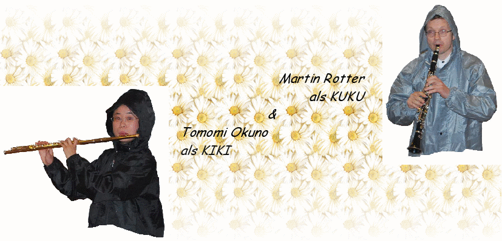

|
⭐︎♪⭐︎ワークショップ⭐︎♪⭐︎
ミニ音楽劇制作
楽器を演奏しながら、音楽劇をつくられてみませんか？随時、開講しております！
こちらをクリック→連絡先
音楽講習会 with Kiki & Kuku !
あなたの音楽づくりに、静かで心が洗われ、インスピレーション豊かな環境をお探しですか…?
または、自分自身の音楽世界に没頭してみたい…?
ヴェネツィアにて、キキとククの独特の個性的な音楽講習会を予約していただけます !
→ インフォメーション
クラヴィコード製作 ＆ 演奏
⚒ ✎ ワークショップ ♫
W. A. モーツァルトがピアノ演奏を習った同じ方法で…
クラヴィコードをご自身で製作し、演奏されてみませんか？
→ インフォメーション
go to top
|
オペラマニア
は、様々なオペラ歌劇を上演します。しかし、
”たった二人”で!!??
オーケストラ、歌手、指揮者、演出家等々はここ「オペラマニア」にはありません...素晴らしい音楽、（オペラ音楽が、演奏者キキとククにより愛情を込めて編曲され、絶品のフルート＆クラリネット二重奏に変身！）
作曲の中に組み込まれた演奏中見え隠れする音楽的な冗談、オペラにまつわる面白おかしい独創的なお話、独自のアイディア衣装、そして、もっともっと面白い”びっくり”があなたを待っています！！
どうぞ、お楽しみ下さい！
|
遊び心をくすぐり、かつ極めて繊細な私たちの演目は主に喜劇オペラです。
例えば、 ジャッキーノ・ロッシーニ作曲：”セビリアの理髪師”、”シンデレラ”、”ウィリアム・テル”...お子様から大人の方まで全ての方々にお楽しみいただけます！
プライベート・パーティーや大切な方へのちょっと変わったアイディア・プレゼントにいかがでしょうか！
例えば、- お誕生日会
- 結婚式パーティー
- 各懇親会、祝賀会 ...
|
オペラ上演に必要な条件：
舞台面積：約３X ４m、必要に応じて照明ライト、野外上演の場合気温16°C 以上３０°C 以下で可能、観客数最高１００人まで

*****
go to top
♪ アルマヴィーヴァ
♪

＜無駄な用心＞や＜セビリアの理髪師＞のオペラ演目名でも有名
台本：カロン・ド・ボーマルシェ
(1732-1799)
作曲家：ジョアキーノ・ロッシーニ
(1792-1868)
ストーリーの舞台：１７世紀、スペイン、セビリア市
ある日突然、貴族アルマヴィーヴァ伯爵は、
バルコニーから顔を出す美人なロジーナに一目惚れ。このロジーナは、後身人である医師Dr.バルトロと暮らしている。アルマヴィーヴァは自分の地位や資産に関係なくロジーナから愛されたいと思い、
「リンドーロ」という偽名でもって貧乏人を装う。そして、彼のひたむきな想いと「愛のカンツォーネ」が酬われ、見事にロジーナの心を射とめるのである。
しかし、
たった一つだけ問題がある・・・実は、後身人であるDr.バルトロがロジーナを彼女の資産を狙って妻にしようと目論んでいるのであった。
それが故、Dr.バルトロはこの可哀想なロジーナを日々厳しく監視・警備し、彼女が話すことには耳もくれず、魅力的なバルトロ家の家政婦マルチェリーナが伝達する情報だけを信じる。
街一人気者で陽気な理髪師
フィガロはマルマヴィーヴァの友達である。また、Dr.バルトロはフィガロの常連客。
さて、
この利口な恋のキューピット、フィガロの達者ぶりで、アルマヴィーヴァとロジーナの＜試練の愛＞は結ばれるのであろうか…！！？？
”恋の願いを
叶える理髪店へようこそおいでやす。恋のトラブル、ま～るくおさめまっせ・・・”
♪ 愛の妙薬 ♪ 
台本：フェリーチェ・ロマーニ (1788-1865)
作曲家：ガエターノ・ドニゼッティ (1797-1848)
ストーリーの舞台：１８世紀、長崎港付近にて
恋は曲者…愛は胃を通る…？単純で間抜けな貧農ネモリーノは、美人で頭も良いが、ちょっと高慢な富農の娘アディーナに想いを寄せ告白するが、アディーナは弱気なネモリーノにはすげない。不幸なネモリーノは、「森羅万象に通暁した、人類の救済者」と名乗る薬売りドゥルカマーラ博士のもとで「愛の秘薬」を注文する。どうぞ、あなたもドゥルカマーラ博士の発明（薬）品をお試しあれ！
"効目が出るまで1日待たれよ。ただし当局がうるさいので、薬のことは秘密ですぞ..."
♪ 魔法のクラリネット ♪

＜シンデレラ＞や＜ラ・チェネレントラ＞のオペラ演目名でも有名
台本：ヤコポ・フェッレッティ
(1784-1852)
作曲家：ジョアキーノ・ロッシーニ
(1792-1868)
ストーリーの舞台：１８世紀、フランスのガウンデンツィオ宮廷にて
意地悪でけちん坊なおやじ、ドン・マグニフィコは、彼の二人の実娘、クロリンダとティスベを連れてお城である舞踏会へいざ出馬する。
だが、彼はまま娘のチェネレントラを連れて行きたくなく、見すぼらしい自宅で彼女を一人ぼっち留守番させるのである・・・
さあ、皆さま、最も人気のある世界童話の本当の(!?)いきさつを、そして、危機一髪の土壇場にどのように魔法のクラリネットが効力を現すことになるのか、超ご期待、ご覧あれ！
♪ オペラ座「ボレロ」
♪

＜ブルスキーノ氏＞や＜冒険する息子＞のオペラ演目名でも有名
台本：ジュゼッペ・マリア・フォッパ
(1760-1845)
作曲家：ジョアキーノ・ロッシーニ
フロルヴィッレとソフィーアは恋に落ち、双方婚姻を固く誓う。
しかし、ソフィーアの後見人ガウンデンツィオ氏はソフィーアの結婚相手を既に契約確定していた：
ソフィーアをガウンデンツィオの旧知ブルスキーノ氏の息子と結婚させるという・・・
♪ どうぶつ会議 ♪
作家：エーリッヒ・ケストナー
(1899-1974)
作曲家：コーボフルーピ
(*1971)
上演権利：ヴァイテンドルフ、ハンブルグ、チャイルド・シアター出版社
さあ、皆さま、ユーモア溢れる国際会議へ是非ご参加ください！
世界中の様々な問題が解決される鍵が見つけられるかもしれません・・・！
対象者：大人と10歳以上の子ども ー「…子どもと有識者（くろうと）向けのお話」（エーリッヒ・ケストナー曰く）
♪ Operaガラ ♪

美食で絶品のオペラ・メロディー献立。お客様自身がお品書き"Menu a la Rossini"から選択していただけます。
♪ 帽子から始まる世界旅行 ♪

旅行会社「オペラマニア」にて、音楽的な旅行を当ててみませんか？！
*****
go to top
オペラマニアは2008年オックスフォード（イギリス）にて、奥野知美とマーティン・ロッターによって結成されました。
アーティスト紹介：
|
奥野知美（ｵｸﾉ
ﾄﾓﾐ）、芸名「キキ」：誕生地 1979 年大阪府。大阪、ウィーン、各音楽芸術大学にてフルート専攻。
ヨーロッパにて西洋古楽学科トラヴェルソ・バロック・フルートを専攻。ドイツ、オランダ、イギリス、フランス、イタリアにて西洋古楽マスタークラス受講。国内外各地でランデスビューネ・ザクセン、ドレスデン・シュターツ・カペッレ、ドレスデン・フィルハーモニー、ドレスデン・ギターアンサンブル、奈良国際アカデミーのメンバー達と室内楽、ソリストとして演奏活動中。また、ドレスデンにて教会音楽の世話人や後進の指導にも力を注ぐ。
|
Martin
Rotter（ﾏｰﾃｨﾝ・ﾛｯﾀｰ）、芸名「クク」：誕生地
1968年クロスターノイブルク（オーストリア）。ウィーン国立音楽芸術大学にてクラリネットを専攻。ウィーン伝統民衆音楽（シュランメル・ムジーク）„Glassscherben 四重奏楽団“の創始者。”ピック・スューセス・ホルツェル”（小さな可愛いG管クラリネット）奏者として、多くの聴衆を夢の世界へと魅了する。また、ドレスデンにて後進の指導にも情熱を燃やす。
この二人は、西洋レネッサンス～バロック～初期古典音楽の独特な音楽世界も、古楽器トラベルソ・フルート＆クラヴィコードのまるで魔法がかかったかのようなうっとりとした音色で創造しています…
→ Traverso & Clavichord
|
*****
go to top
～ゲストブックより～
|
-
本日、キキとククによる非常にずば抜けた二重奏を目の当たりにしました。この二人は、音楽的に素晴らしい芸術家達です。「セビリアの理髪師」を、ユーモアたっぷりと私達へ身近に届けてくれました。心からお礼を！
-
日本公演おめでとう！！二人の演奏をこれからも楽しみにしています♪
-
おめでとうございます。素晴らしいフルートとクラリネットの音色。二つの楽器だけでフルオーケストラの音楽の世界に引き込まれます。あー、生徒たちに聴かせたかった…又、日本でも演奏会してね。
-
恋人同士の様なお二人に幸あれ！！
-
楽しいオペラでした。フルート、クラリネット、良くマッチしていました。
-
「これを知る者はこれを好む者に如かず、これを好む者はこれを楽しむ者に如かず」
（何事もそれを知っているだけでは、それを好むという力には及ばない。しかし好むよりもそれを楽しむ者には適わない！）
3000
年も昔に孔子様も論語で説いておられます。皆様へ、どうぞお楽しみ下さい…。
大文字国際交流音楽祭実行委員会より
|
-
本当にすごいパフォーマンスでした。ありがとうございました。
-
楽しく音楽的にも絶好の素晴らしいオペラを届けて下さり、心を込めてありがとうございました！素晴らしくクリエイティブなこの二人の芸術家達に、これからも成功あれ！
-
素晴らしい音楽、楽しいお芝居、ありがとうございました。
-
とてもおもしろかったです。ドイツ語に日本語が混ざっていたのでわかりやすかったです。キキのお医者さんが特に素敵でした。
-
サイコーに楽しかったです！！演奏もすばらしかったです！！！今日ここに来れて良かったです。
|
*****
go to top
私たちオペラマニアは、あなたの笑顔が見たいのです。
御興味ある方々からのお声、お問い合わせを心よりお待ちしております！！
オペラマニアの企画予定されている出演情報をお知りになりたい方は、
どうぞ下記のEメールアドレスにて御連絡くださいますようお願いいたします。
連絡先:
オペラマニア
Tel.: (+49)
0176 5032 55 53
E-メール:
operamania[at]icloud.com
リンク:
Tomomi
Okuno |
Martin
Rotter |
”TC” ～トラヴェルソ＆クラヴィコード～ |
Gioacchino
Rossini |
Gerold
Klarinetten (ククのクラリネット) |
ドイツニュースダイジェストより「私の街のレポーター：ドレスデン」
トップページへ
Impressum
Datenschutzerklaerung
Last updated 9th of December 2023
|